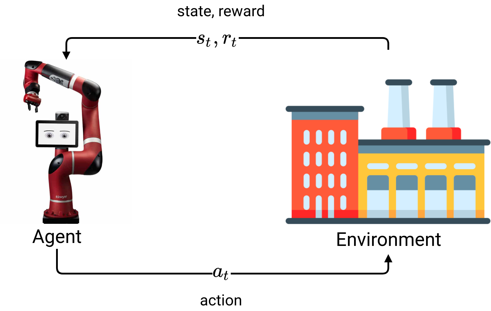
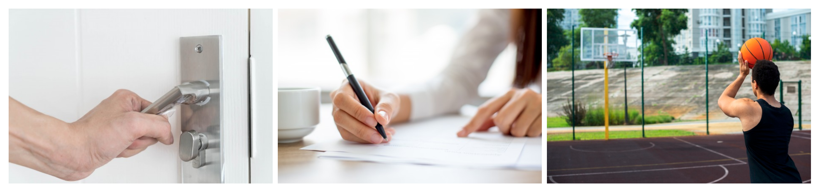
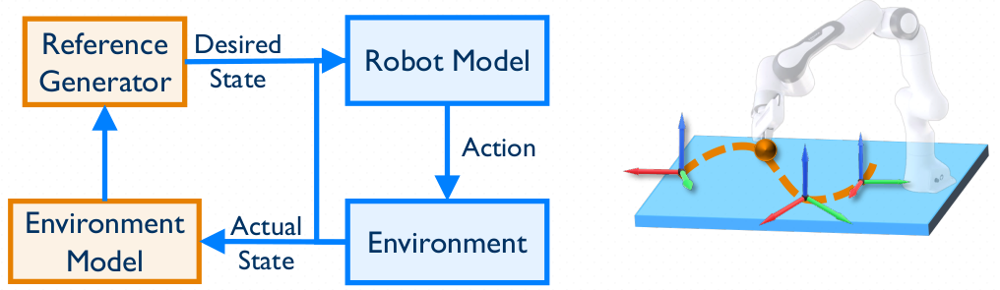
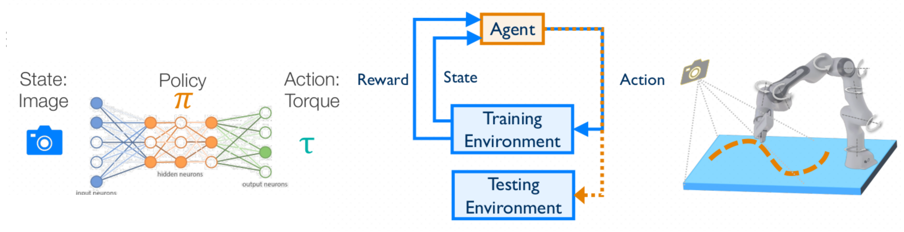
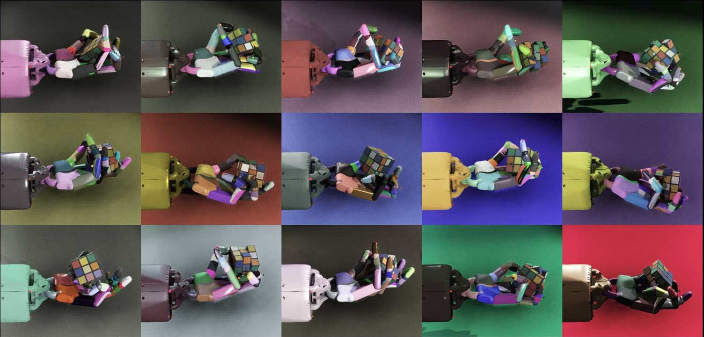
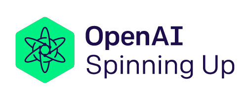
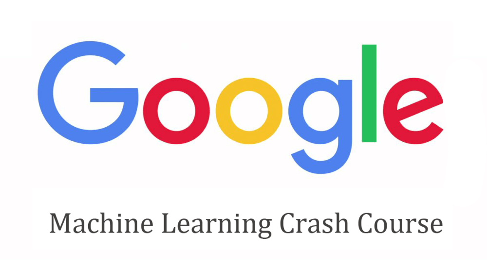

Learning Dexterous Manipulation with Model-Free Deep Reinforcement Learning
Thesis Director: Ph.D. Reyes Ríos Cabrera
Author: Luis Castillo
Author: Luis Castillo
Presentation outline
Introduction
Deep Reinforcement Learning have great potential in real-world applications. Recent advances have shown that these methods can solve tasks with superior performance than humans in some scenarios, e.g. classic Atari games Mnih et al. (2013), complicated board games (Silver et al. 2016, 2017) or massive online multiplayer games OpenAI (2018).
DRL is not just for games. Due to the simplicity of the RL framework. The same algorithms for solving games can be used to control physical robots in real-time Gao et al. (2020). However, DRL methods are not intended to completely replace traditional control approaches. But, these methods can be applied in specific scenarios or in combination with traditional methods.
State of the art
RL algorithms

Sim-To-Real (1/4)
Peng et al. (2018) propose to use dynamics randomization (DR) to train in simulation, and deploy the learned policies directly on a physical robot to solve pushing object task, achieving good performance.
Sim-To-Real (2/4)
OpenAI et al. (2018) propose to learn dexterity of in-hand manipulation to perform object reorientation for a five-finger robotic hand, using PPO with DR in simulation. They use the same code for playing Dota 2 OpenAI (2018).
Sim-To-Real (3/4)
Tan et al. (2018) propose to learn locomotion for quadruped robots. They learn control policies in simulation and deployed on a quadruped robot. They perform system identification for tuning the simulation parameters to improve the fidelity of the physics simulator.
Sim-To-Real (4/4)
Zeng et al. (2020) propose an end-to-end AI system for picking and throwing objects. Achieving 85% of accuracy, more than double that achieved with analytical solutions (40%). They train the policy in simulation and then use an automatic system for fine-tuning on physical robot.
Proposal description
Motivation
In most cases, the dynamic process of robotic control can be approximated as an MDP making it an ideal field to experiment with DRL algorithms.
In addition, recently, large technology companies and prestigious research centers have focused their research in this area, such as OpenAI, who solved the Rubik’s cube with a five-finger articulated robotic hand completely in simulation.
Training in a physical world
We can use DRL algorithms to train robust control policies directly in the physical robot. But this approach has some disadvantages:
Sampling inefficient: The training may take thousands of hours to solve a single task.
Safety issues: DRL methods use exploration techniques that can be result in dangerous actions.
Training in simulation
Training in simulation and then transferring learned policy to physical systems (i.e, sim-to-real) or using expert human demonstrations are two approaches that satisfy computational and safety requirements in robot learning tasks.
Background: RL
Reinforcement Learning (RL) is a subfield of ML that address the problem of automatic learning for optimal decisions over time. The main characters of the RL are the agent and the environment. The environment is the world where the agent lives and with which he interacts.

Deep Reinforcement Learning
DRL combine the advantages of DL and RL for building AI systems. The main reason to use DL in RL is to leverage the scalability of DNN in high-dimensional space. Mnih et al. (2013) prove this by training a DNN from raw pixels to play classic arcade games.
Problem Statement
Humans can solve many activities that are presented to us in our daily life without much effort, e.g. move and throw objects, open doors or write. However, although these tasks may seem simple, they require a certain degree of dexterous, which we humans learn through experience.

Current approach
Trying to solve these activities with a robot following traditional robot control approaches represents a big challenge, because it is necessary to solve complex dynamic models and consider many uncertainties in the process.

DRL approach
However, the latest advances in DRL applied to robotic control have shown that it is possible to teach robots to solve this kind of tasks by trial and error.

Where to get the data?
We can gather all the data necessary for the training in simulation, and then deploy the learned control policy in a physical robot.
Reality Gap
However, simulation environments do not represent the full complexity of the real world, and the policies learned in these virtual environments only perform well under conditions similar to those seen during the training phase. This disparity between virtual simulation environments and the real world is known as the reality gap.

DR/ADR
(Peng et al. 2018; Akkaya et al. 2019) shown that it is possible to overcome this barrier using techniques that randomly modify the dynamics of the simulator during the training phase in order to expose the agent to a wide range of variations in the environment, this forces the agent to learn to adapt to the constant changes in the environment.

Hypothesis
If we randomly modify the dynamics of a simulation environment in order to learn a robust control policy for solving a dexterous manipulation task, then it is possible to transfer this learned policy to a physical robot and solve the task with little or any fine-tuning.
General objective
The general objective of this thesis project is:
- Train an agent in simulation to solve a specific dexterous manipulation task using reinforcement learning algorithms with domain randomization techniques and then transfer the learned policy to a physical robot.
Specific objectives
The following objectives emerge from the main objective of this research:
| Task | Start | Duration | Type |
|---|---|---|---|
| Review Deep RL literature | 2020-07-15 | 60 | Research |
| Select state-of-the-art simulator | 2020-09-15 | 15 | Research |
| Learn to use the simulator | 2020-09-30 | 60 | Learning |
| Create simulation environment | 2020-12-01 | 30 | Develop |
| Train first agent without DR/ADR | 2021-01-01 | 30 | Develop |
| Review state-of-the-art DR/ADR | 2021-02-01 | 15 | Research |
| Tranin second agent with DR/ADR | 2021-02-15 | 30 | Develop |
| Transfer policies to real robot | 2021-03-15 | 30 | Develop |
| Make a comparative between both policies | 2021-04-15 | 30 | Analysis |
| Write the thesis | 2021-03-15 | 120 | Writing |
Scientific contribution
The main contribution of this work is to solve a dexterous manipulation task (probably throwing objects, like balls, out of the robot’s reach range) with a redundant serial robot by training an agent in simulation.
Current progress
I’m working on the first specific objective “Review Deep RL literature”, for that, I’m actively reading the state-of-the-art papers and also the following RL/DRL books:

In addition to the literature review work, I started taking two RL/ML courses:
- OpenAI’s Spinning Up in Deep RL

- Google’s Machine Learning Crash Course

Also, I have made progress on my second objective “Select state-of-the art simulation”. For my CAD course, I developed a project for path-planning in manufacturing process with robots on free-form surfaces, using one of the state-of-the-art robotics simulators (CoppeliaSim with PyRep ML toolkit).
Chronogram of activities
References
Akkaya, Ilge, Marcin Andrychowicz, Maciek Chociej, Mateusz Litwin, Bob McGrew, Arthur Petron, Alex Paino, et al. 2019. “Solving Rubik’s Cube with a Robot Hand.” arXiv Preprint arXiv:1910.07113.
Gao, Wenbo, Laura Graesser, Krzysztof Choromanski, Xingyou Song, Nevena Lazic, Pannag Sanketi, Vikas Sindhwani, and Navdeep Jaitly. 2020. “Robotic Table Tennis with Model-Free Reinforcement Learning.” arXiv Preprint arXiv:2003.14398.
Gu, Shixiang, Ethan Holly, Timothy Lillicrap, and Sergey Levine. 2017. “Deep Reinforcement Learning for Robotic Manipulation with Asynchronous Off-Policy Updates.” In 2017 Ieee International Conference on Robotics and Automation (Icra), 3389–96. IEEE.
Mnih, Volodymyr, Koray Kavukcuoglu, David Silver, Alex Graves, Ioannis Antonoglou, Daan Wierstra, and Martin Riedmiller. 2013. “Playing Atari with Deep Reinforcement Learning.” arXiv Preprint arXiv:1312.5602.
OpenAI. 2018. “OpenAI Five.” https://blog.openai.com/openai-five/.
OpenAI, Marcin Andrychowicz, Bowen Baker, Maciek Chociej, Rafal Jozefowicz, Bob McGrew, Jakub Pachocki, et al. 2018. “Learning Dexterous in-Hand Manipulation.” http://arxiv.org/abs/1808.00177.
Peng, Xue Bin, Marcin Andrychowicz, Wojciech Zaremba, and Pieter Abbeel. 2018. “Sim-to-Real Transfer of Robotic Control with Dynamics Randomization.” In 2018 Ieee International Conference on Robotics and Automation (Icra), 1–8. IEEE.
Rajeswaran, Aravind, Vikash Kumar, Abhishek Gupta, Giulia Vezzani, John Schulman, Emanuel Todorov, and Sergey Levine. 2017. “Learning Complex Dexterous Manipulation with Deep Reinforcement Learning and Demonstrations.” arXiv Preprint arXiv:1709.10087.
Silver, David, Aja Huang, Chris J Maddison, Arthur Guez, Laurent Sifre, George Van Den Driessche, Julian Schrittwieser, et al. 2016. “Mastering the Game of Go with Deep Neural Networks and Tree Search.” Nature 529 (7587): 484–89.
Silver, David, Thomas Hubert, Julian Schrittwieser, Ioannis Antonoglou, Matthew Lai, Arthur Guez, Marc Lanctot, et al. 2017. “Mastering Chess and Shogi by Self-Play with a General Reinforcement Learning Algorithm.” arXiv Preprint arXiv:1712.01815.
Song, Xingyou, Yuxiang Yang, Krzysztof Choromanski, Ken Caluwaerts, Wenbo Gao, Chelsea Finn, and Jie Tan. 2020. “Rapidly Adaptable Legged Robots via Evolutionary Meta-Learning.” arXiv Preprint arXiv:2003.01239.
Tan, Jie, Tingnan Zhang, Erwin Coumans, Atil Iscen, Yunfei Bai, Danijar Hafner, Steven Bohez, and Vincent Vanhoucke. 2018. “Sim-to-Real: Learning Agile Locomotion for Quadruped Robots.” arXiv Preprint arXiv:1804.10332.
Tobin, Josh, Rachel Fong, Alex Ray, Jonas Schneider, Wojciech Zaremba, and Pieter Abbeel. 2017. “Domain Randomization for Transferring Deep Neural Networks from Simulation to the Real World.” In 2017 Ieee/Rsj International Conference on Intelligent Robots and Systems (Iros), 23–30. IEEE.
Zeng, Andy, Shuran Song, Johnny Lee, Alberto Rodriguez, and Thomas Funkhouser. 2020. “Tossingbot: Learning to Throw Arbitrary Objects with Residual Physics.” IEEE Transactions on Robotics.